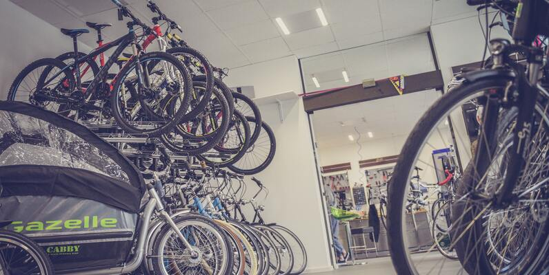

With two years of professional experience in data analysis, I possess comprehensive expertise in SQL, MS Excel, and data visualization tools like PowerBI and Tableau. Very interested in data analysis, I have a strong ability to manage data processes, conduct analysis, and generate insights. Skilled in communication and problem-solving, I contribute effectively to achieving business objectives. Native in Polish, fluent in English, and proficient in Spanish.

This project analyzes sales data from a bike store database, using SQL queries to identify top-selling products, most profitable stores, and sales trends. The analysis provides insights into customer behavior and facilitates more effective inventory management and sales strategies.
This project analyzes video game sales data using SQL queries, exploring top-selling games by region and publishers' genre preferences. It also examines global sales trends and provides insights into successful publishers and popular game genres.
This project involved analyzing the most famous songs of 2023 as listed on Spotify. The analysis delved into each song's attributes, popularity, and presence across various music platforms. It provided insights into music trends and listener preferences by examining features, playlists, and song popularity.
This Tableau project analyzed data from a large wrestling tournament held this year. It featured 500 top athletes from three global federations competing in one-on-one matches. The analysis aimed to rank wrestlers by their number of victories, using attributes like gender, weight, height, nationality, and performance scores.
This project analyzes Titanic passenger data, including information such as age, sex, passenger class, fare, number of siblings/spouses, number of parents/children, embarkation port, and survival status. It explores relationships between these variables and the likelihood of surviving the disaster.